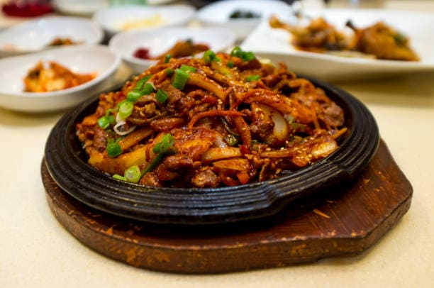

Jejuk Bokkeum

El Jeyuk Bokkeum es un salteado picante de cerdo marinado en gochujang, ajo, jengibre y salsa de soja. Es un plato lleno de sabor, ligeramente dulce y especiado, que suele servirse con arroz y hojas de lechuga para envolver. Es muy popular en los hogares coreanos y en los restaurantes tradicionales.